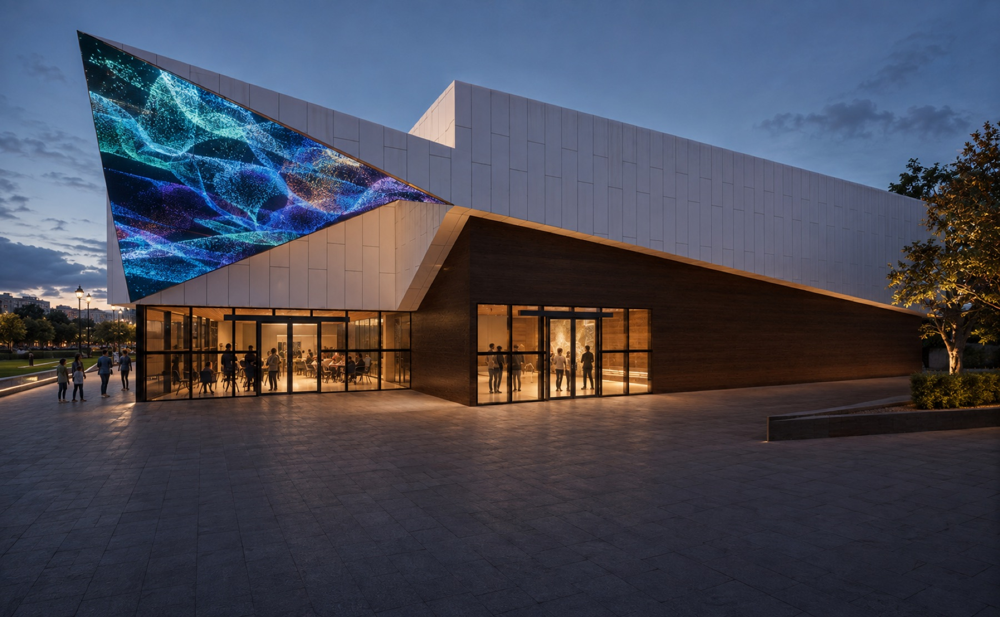
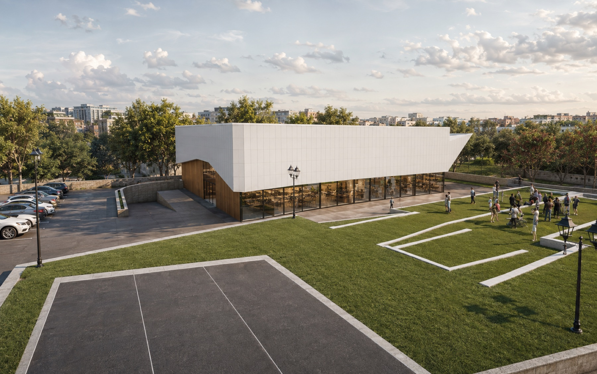
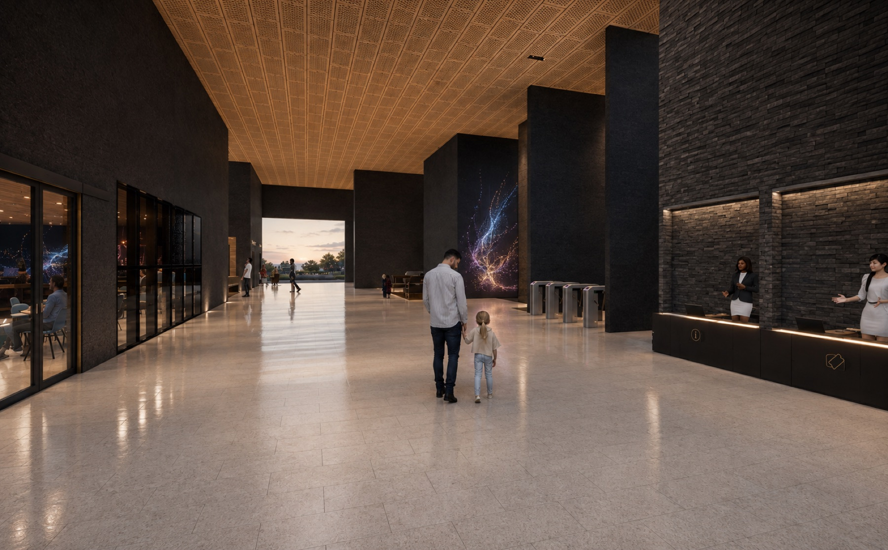
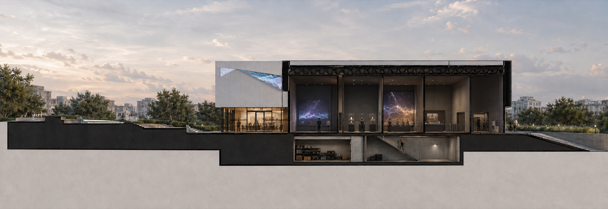

A03 · Museum · Ankara
Data translated into spatial and public experience
A flexible museum in which data is treated as material, atmosphere, exhibition content, and a changing connection between the interior and the city.

Project idea
From information to atmosphere
The project began by asking how datasets might become physical and spatial rather than remain charts or screen-based graphics. Precedent research into immersive media installations, including the work of Refik Anadol, informed an architecture able to support projected, luminous, kinetic, and object-based exhibitions.
A tall, adaptable gallery forms the center of the museum. Supporting rooms, ticketing, cloakroom, waiting areas, café, and service spaces are arranged around a clear visitor sequence. A triangular media surface extends the exhibition to the facade and signals the building's changing content from outside.
Spatial system
A robust frame for changing media
The restrained palette of dark walls, timber soffits, white metal cladding, glass, and exposed structure gives the projected work visual priority. Large spans and defined gallery bays allow different display scales, while the lower service level supports storage, installation, and building operations.


